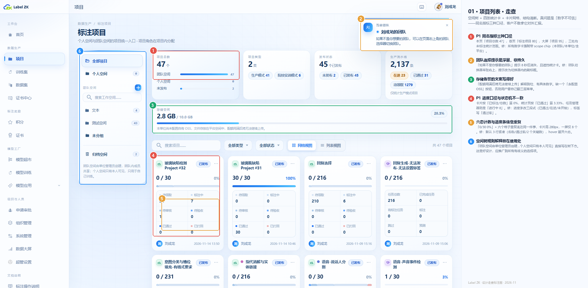
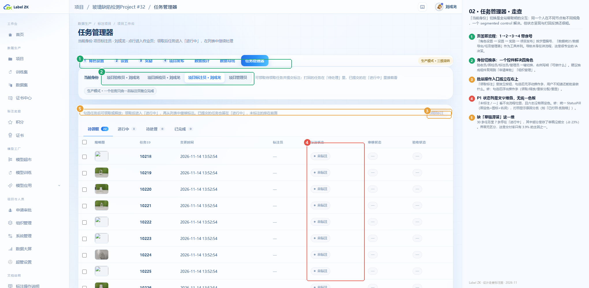
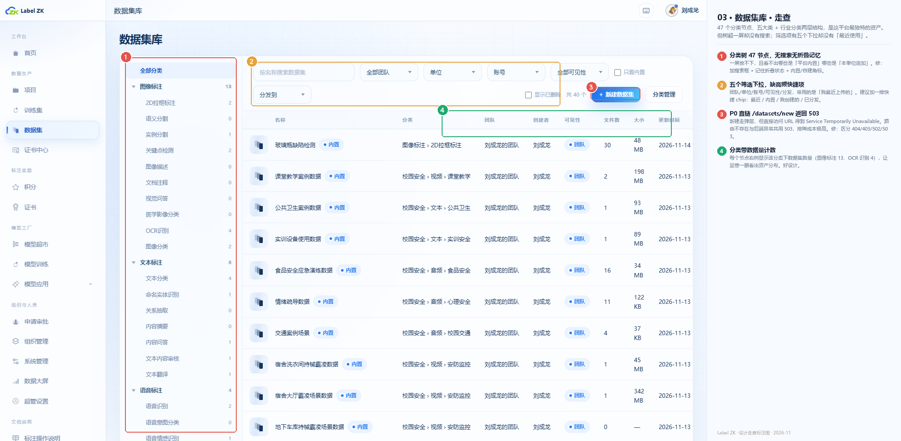
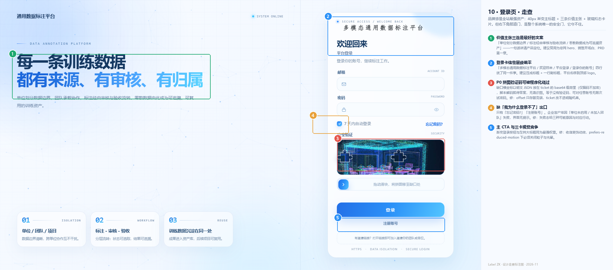
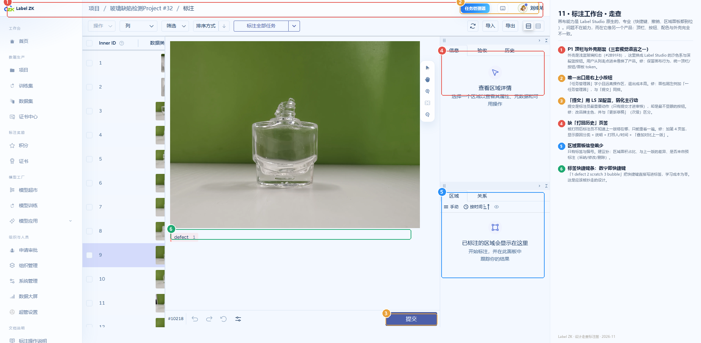
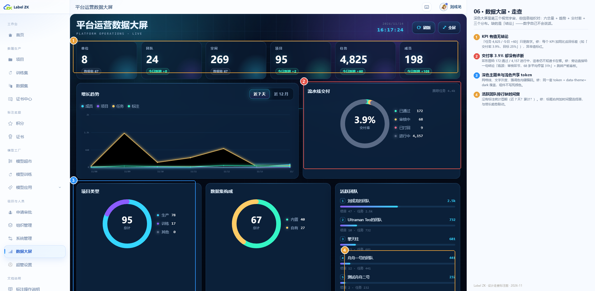

三个入口
要动手点
可交互高保真原型 →
8 个页面：首页 / 产能看板（全新）/ 项目列表 / 任务管理器 / 标注工作台 / 积分 / 模型超市 / 数据大屏。纯静态，无需服务器。
要立项
重构版 PRD →
10 个 Epic / 40+ 需求 / OKR / 三个版本路线图 / 风险对策。每条需求带 Gherkin 验收标准。
要判断
产品拆解报告 →
定位、角色、功能地图、7 处亮点、8 处短板、商业模式推断，以及"如果让我接手的三件事"。
拆解分析（9 篇）
01
产品拆解报告
一句话结论 / 解决什么问题 / 功能地图 / 闭环 / 技术事实 / 亮点与短板
02
信息架构与导航地图
全局框架 / 30 条路由 / 项目页签即流程 / 口径缺陷
03
竞品对标分析
vs Label Studio / Labelbox / Scale / 外包公司 · SWOT · 三条护城河建议
04
用户画像与关键旅程
5 个真实画像 / 3 条旅程情绪曲线 / JTBD 满足度
05
数据模型与状态机
ER 图 / 字段级定义 / 六态机 / 积分公式 / RBAC 三要素
06
接口清单与数据字典
61 个端点 / 分类树 47 节点 / 性能与工程质量观察
07
迭代路线图与优先级
RICE 排序 Top15 / 三版本节奏与门槛 / 不做清单
08
体验走查与缺陷清单
P0×2 / P1×5 / P2×5 / P3×3 · 8 维评分 6.6 · 三步修复路线
09
技术架构与安全观察
架构还原 / 验证码缺陷复现 / 规模洞察 / 工程建议
PRD 与设计
PRD
产品需求文档 v2.0
一页纸摘要 → 10 Epic → 功能详述 → 非功能 → 埋点 → 发布计划 → 风险
PRD
用户故事与验收标准
30 条 Gherkin（Given/When/Then），测试可直接提用例
PRD
术语表与指标字典
术语定义 / 禁用词清单 / 6 类指标公式 / 格式规范
DESIGN
设计系统
5 条原则 / 色彩与六态色板 / 排版 / 12 个组件 / 双主题映射
DESIGN
页面规格说明
30 个页面的布局·组件·状态·改造点（给 UI 与前端）
DESIGN
tokens.css
可直接 import 的设计变量（浅色 + 深色两主题）
带标注的走查图（11 张）


A01 · 项目列表 — 同名指标三种口径

A02 · 任务管理器 — 状态色板与草稿维度

A03 · 数据集库 — 47 节点分类树无搜索

A10 · 登录页 — P0 验证码可绕过

A11 · 标注工作台 — 三套视觉语言之一

A06 · 数据大屏 — KPI 有值无结论交付说明
10 分钟
一页纸速览
定位 / 关键数字 / 三个最好 / 三个最该修 / 三版本
怎么用
交付说明
三种使用场景 / 版本节奏 / 三条最容易踩的坑 / 没做的事
怎么验
复现与数据来源
抓取环境 / 登录流程 / 路由清单 / 脱敏清单 / 复现命令
边界声明：所有截图与接口样例来自测试/演示环境，人名、邮箱、路径、密钥均已脱敏。安全缺陷描述仅用于修复，附带最小复现路径是为了让研发能验证"确实修好了"。